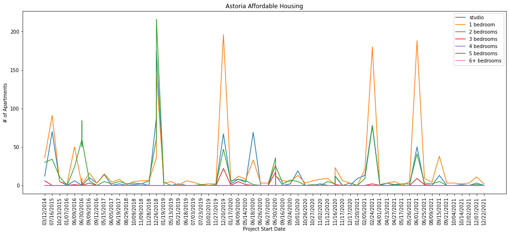
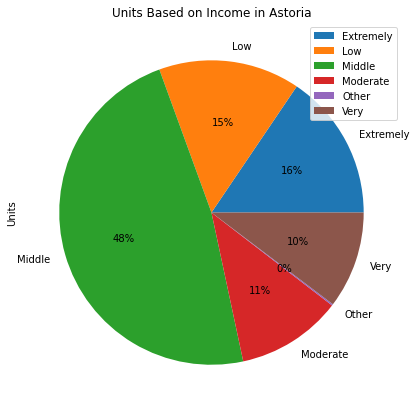

Nico Bautista-Libreros
Total Population: 154,000
| Zip Code | 11101 | 11102 | 11103 | 11105 | 11106 | Average |
|---|---|---|---|---|---|---|
| Median Age | 34 | 34.3 | 33.9 | 35.7 | 35.8 | 34.74 |
| Median Household Income | $75,581 | $71,382 | $76,234 | $79,883 | $68,530 | $74,322 |
| Below Poverty Line | 16.85% | 16.08% | 11.51% | 9.33% | 12.63% | 13.28% |
| Unemployed Rate | 6.8% | 4.36% | 5.64% | 3.33% | 5.16% | 5.06% |
| Less than HS | 10.54% | 12.62% | 11.6% | 11.46% | 13.27% | 11.9% |
Source: socialexplorer.com
According to Niche, Astoria has an A overall ranking and ranks 43rd in all neighborhoods in New York City. While the cost of living is high, granting Astoria a C- rating, the borough makes up in other categories such as Diversity, Outdoor Activities, Health and Fitness, and Good for Families. Niche gave Housing in Astoria a C- ranking because of its increasing rent prices. Astoria also has a B+ in Commute. Similarly, StreetAdvisor praises Astoria for its Public Transportation. Unlike Niche, StreetAdvisor says Astoria is Great for Cost of Living and Saftey. DNA Info ranks Astoria 19th for Safest for all Crime, 20th for Safest for Violent Crime, and 26th for Safest for Property Crime.
Astoria, with 8335 affordable housing units, has more units than Elmhurst, Flushing, and Jackson Heights combined. The graph for Project Start Date in Astoria has four prominent spikes where most units started construction in late 2018, late 2019, early 2021, and mid 2021. Construction of new projects dwindled during 2020 because of the Covid-19 pandemic. Additionally, one-bedroom and two-bedroom units seem to be the most prevalent type of affordable housing in Astoria. Few four, five, six + bedroom units were constructed in Astoria. Astoria’s proximity to Manhattan could explain the many one and two-bedroom units, which provide housing to single people starting their professional careers who commute to Manhattan using the N or W train lines.
The majority of the affordable housing units in Astoria are occupied by Middle-Income earners or people who earn 121% to 165% of the area median income (AMI). Middle-Income for NYC is $121,420. In other words, most people in affordable housing in Astoria are not living below the poverty line.

Source: Affordable Housing Production by Building
Area Median Income
Below is a map of affordable housing buildings/projects in Astoria.
There are 41 buildings/projects in Astoria.